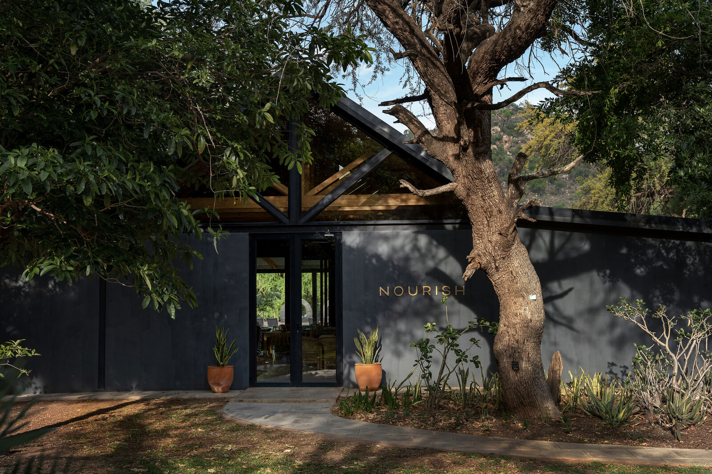
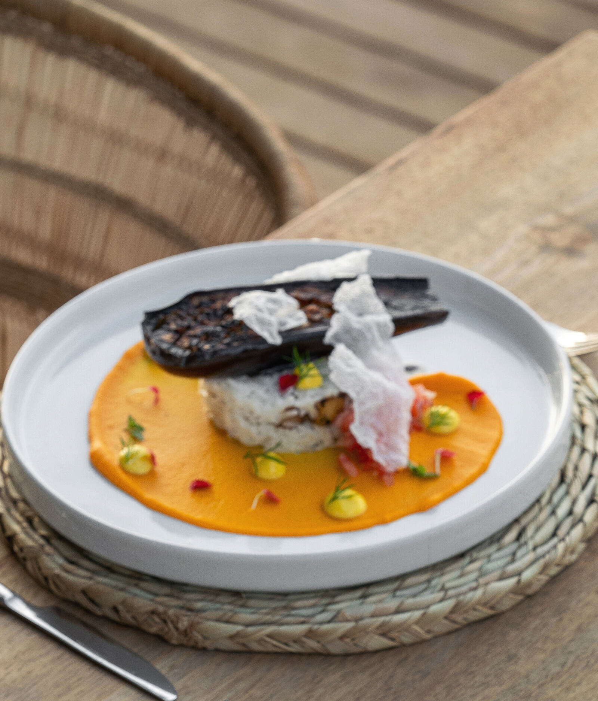
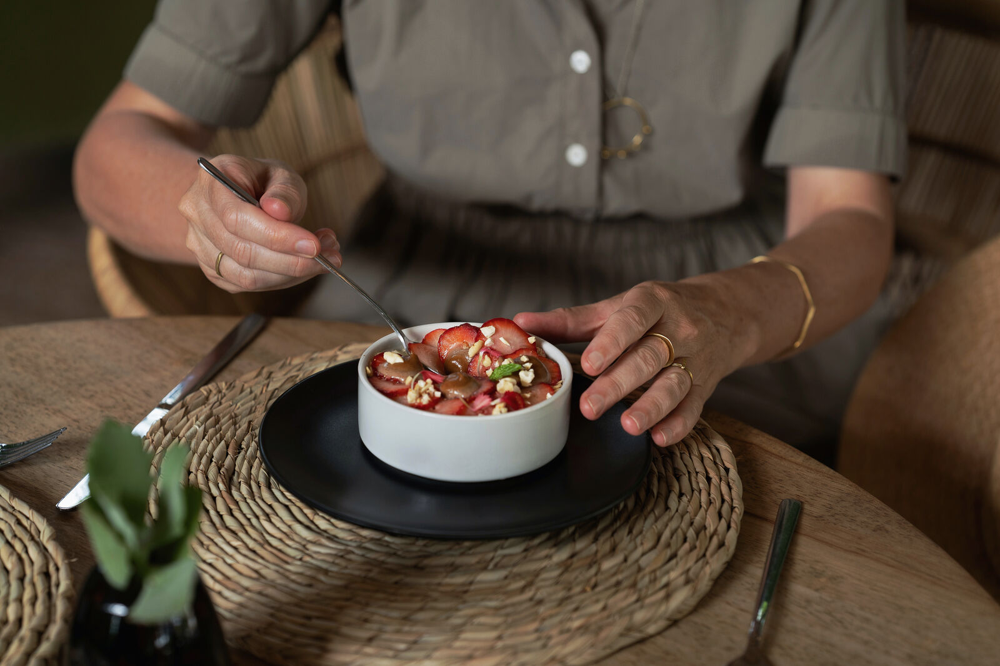
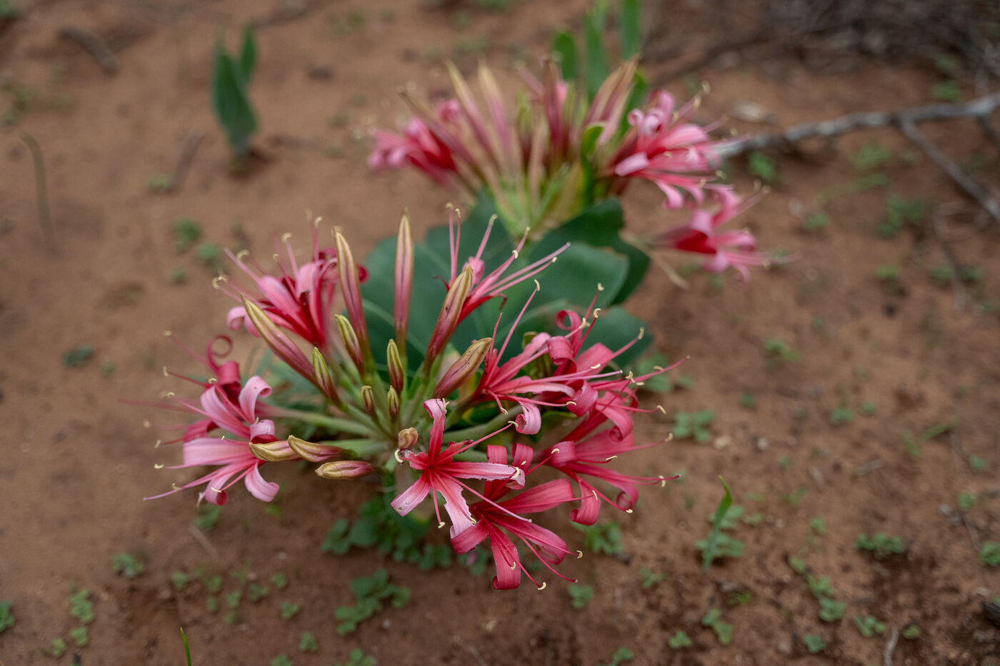
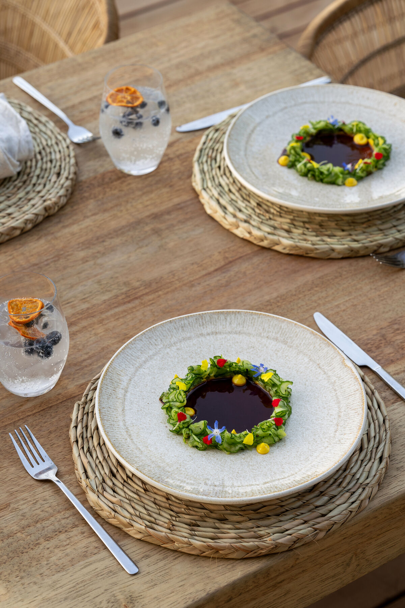
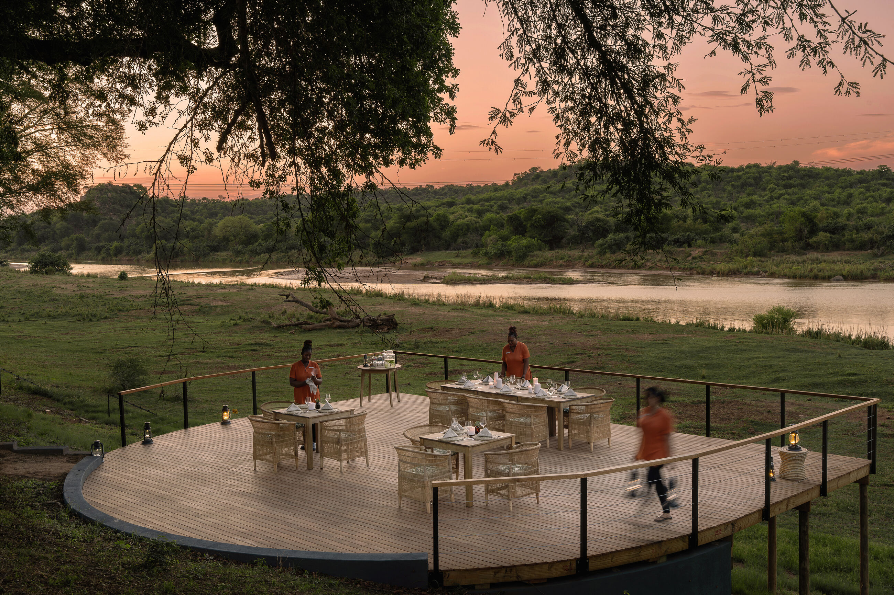
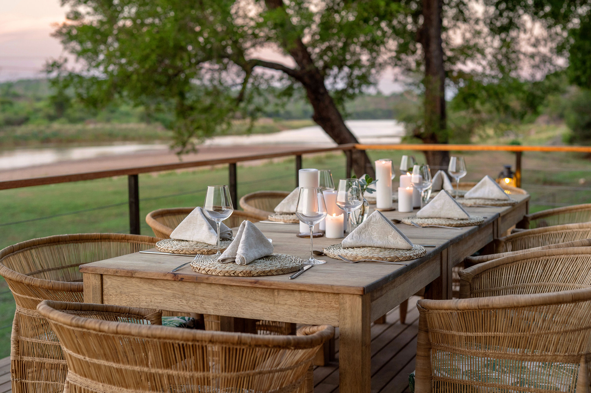

Nourishment
Food that supports the experience
Every meal is vegetarian or plant-based — prepared with fresh seasonal ingredients and designed to sustain energy through long safari days and active practices. If you have dietary restrictions or allergies, let us know and we will accommodate you.







